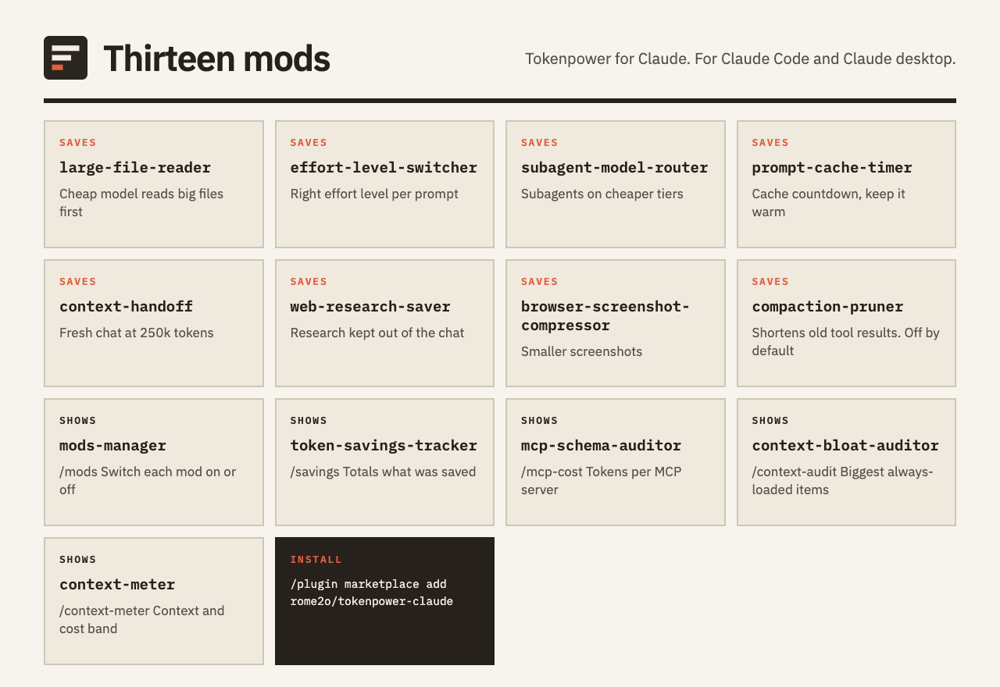

Token-saving mods for Claude Code and desktop
Tokenpower is a marketplace of thirteen Claude mods. They send bulky reading to a cheaper model, move simple subagent work down a tier, and count the tokens saved.
1. Add the marketplace
/plugin marketplace add rome2o/tokenpower-claude
2. Install three starter mods
Run each line as its own command, in this order.
/plugin install large-file-reader@tokenpower-claude
/plugin install token-savings-tracker@tokenpower-claude
/plugin install mods-manager@tokenpower-claude
/reload-plugins
Run these inside Claude. Then type /mods to switch each mod on or off, and /savings for the totals.
- Installs from
- main
- Mods
- 13
- Licence
- MIT
- Platform
- macOS
- Author
- Kazim Ali
The thirteen mods
Each mod switches on or off on its own. Install any of them with /plugin install <mod-id>@.

| Mod | What it does |
|---|---|
| large-file-reader | Hands big files and connector results to Haiku first. Claude sees brief notes, plus a path to open the full version when it needs it. |
| effort-level-switcher | Reads each prompt, suggests the effort level it calls for, and switches when you agree, or by itself in auto mode. |
| subagent-model-router | Haiku rates each subagent task. A task runs on a cheaper model only when that rating is confident. The main chat keeps its model. |
| prompt-cache-timer | Counts down until the prompt cache goes cold. Can ping it to keep it warm. |
| context-handoff | When a chat reaches 250k tokens, offers to write a handoff of the whole chat and open a new chat from it. |
| web-research-saver | Moves web research out of the main chat. A cheap worker reads the pages and sends back a short brief with its sources. |
| browser-screenshot-compressor | Makes each browser screenshot smaller, or swaps it for a short Haiku description in words. |
| mods-manager | Opens the /mods pane, which lists every mod on this Mac and turns each one on or off. |
| token-savings-tracker | Opens the /savings pane with the tokens the other mods saved, for today and for this chat. |
| mcp-schema-auditor | New, not yet measured in daily use, not run live. The /mcp-cost pane ranks your MCP servers by the tokens their tool definitions add to every request, and suggests which to disable. Estimates only. It never changes your config. |
| context-bloat-auditor | New, not yet measured in daily use, not run live. The /context-audit pane lists the always-loaded items that cost the most tokens and flags big or duplicated ones. Read-only. |
| context-meter | New, not yet measured in daily use, not run live. The /context-meter band above the prompt shows context by category, distance to compaction, the session cost as Claude reports it, and today's tokens saved. |
| compaction-pruner | New, not yet measured in daily use, not run live. Off by default. At compaction it shortens old large tool results and keeps the originals in a folder you can open. It starts in dry run mode and deletes nothing. |
How it saves tokens
-
Read with a cheap model first
Claude gets short notes, not the full input.
large-file-reader, web-research-saver, browser-screenshot-compressor
-
Right-size the model and effort
Each task gets the cheapest tier that can do it.
subagent-model-router, effort-level-switcher
-
Watch the cache and the context
Avoid paying to rebuild a cold or oversized chat, and see what fills the window.
prompt-cache-timer, context-handoff, context-meter, context-bloat-auditor, mcp-schema-auditor, compaction-pruner
What it touches
- All shared state is kept in
~/.claude/mods,~/.claude/mods-logsand~/.claude/handoffs. - Each mod switches off in
/modswithout stopping the others. - The web research saver fetches only public URLs from search results and skips local and private addresses. Fetched text is handled as untrusted data.
- The large file reader acts on a Read or a shell read of a file over about 2,000 tokens, and on connector results over about 4,000 tokens. It has Haiku, a cheaper model, read that content, and it keeps its notes and the full output on disk. It opens saved tool outputs only from
~/.claude/projects/. - The context handoff reads the chat transcript so it can write the summary.
- The four newest mods make no network calls. mcp-schema-auditor, context-bloat-auditor and context-meter read the sizes Claude reports and the
/modsswitch file, and write only their own log under~/.claude/mods-logs/. context-meter also reads the savings ledger and never writes it. context-bloat-auditor never reads your file contents and hides credential-like file names. - compaction-pruner is off by default, deletes nothing and makes no model calls. Before it shortens a tool result it saves the full text, with API keys, tokens and private key blocks masked, under
~/.claude/mods-logs/compaction-pruner/. Treat that folder as sensitive.
Known limits
- The web research saver does not follow redirect chains or resolve DNS itself. A public URL that redirects to an internal address is not blocked.
- The large file reader checks the path text only, so a symlink placed inside its tool-results folder is not detected.
- Fetched web text reaches Claude fenced and labelled as untrusted data. This lowers prompt-injection risk but does not remove it.
- compaction-pruner masks secrets by pattern matching, so a secret in an unusual format can be saved as it is, and a masked value cannot be recovered from the saved copy. context-bloat-auditor recognises credential-like files by name, so an unusual name for a secret file can still be shown.
Report a vulnerability through GitHub private vulnerability reporting on the repository. See SECURITY.md, which covers all thirteen mods.
Status
Built and installed on one Mac, not yet measured in daily use.
The /savings pane totals what the other mods report, and marks each row REAL or ESTIMATED.
Four newer mods
mcp-schema-auditor, context-bloat-auditor, context-meter and compaction-pruner are listed in the marketplace that step 1 adds. They are type-checked and unit-checked, but they are new, not yet measured in daily use and not yet run in a live Claude session. They make no savings claims. compaction-pruner is off by default, and /savings does not count it.
Four details still need a live check: whether token figures include MCP server instructions, how hex colours render, how bands stack, and which unit the percentage uses.
Requirements
- Claude, terminal
- 2.1.287 or newer
- Claude, desktop app
- 2.1.286 or newer
- Platform
- macOS is the tested platform
- Optional: PDFs
brew install popplerlets the large file reader read PDFs.- Optional: web scraping
- The Firecrawl command-line tool (npm) lets the web research saver scrape pages.
- Optional: screenshots
- The screenshot compressor uses
sips, which ships with macOS.
Questions
What does Tokenpower for Claude do?
It is a marketplace of thirteen Claude mods. Bulky reading goes to a cheaper model first, simple subagent work moves down a tier, panes show where tokens go, and a pane counts the tokens saved.
How do I install it?
Inside Claude, run /plugin marketplace add rome2o/tokenpower-claude. Then run /plugin install <mod-id>@tokenpower-claude once for each mod you want, for example large-file-reader, and finish with /reload-plugins.
Can I switch a mod off?
Yes. Type /mods to see every mod and switch each one on or off. The other mods keep running.
How many tokens will it save?
That is not measured yet. The mods were built and installed on one Mac and have not been measured in daily use. Type /savings to see totals from your own sessions. Each row is marked REAL or ESTIMATED.
Does it work on Windows or Linux?
macOS is the tested platform. The screenshot compressor relies on sips, which ships with macOS.
What does it read or write on my machine?
Shared state lives under ~/.claude/mods, ~/.claude/mods-logs and ~/.claude/handoffs. The context handoff reads the chat transcript to write its summary, and the web research saver fetches public URLs found in search results. The four newest mods make no network calls, and compaction-pruner is off by default.